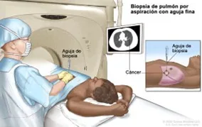
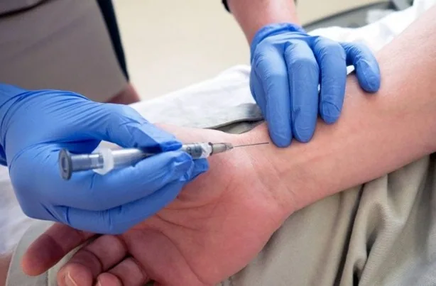
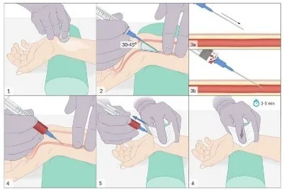

Sistema respiratorio · Procedimientos diagnósticos especializados
Son técnicas médicas, generalmente invasivas o mínimamente invasivas, que permiten observar directamente las vías respiratorias, obtener muestras de tejido o líquido y confirmar el diagnóstico de enfermedades pulmonares cuando los exámenes de laboratorio y las pruebas de imagen no son suficientes. Son fundamentales para identificar afecciones como el asma, la enfermedad pulmonar obstructiva crónica (EPOC) y la fibrosis pulmonar.
Procedimiento endoscópico que consiste en introducir un broncoscopio (tubo flexible con una cámara y luz) a través de la nariz o la boca hasta la tráquea y los bronquios para visualizar el interior de las vías respiratorias. Se usa para la detección y el tratamiento del cáncer. También se llama broncofibroscopia, fibrobroncoscopia y fibroscopia bronquial.
Indicaciones a tener en cuenta
•Sospecha de cáncer de pulmón
•Tos persistente
•Hemoptisis (tos con sangre)
•Infecciones pulmonares recurrentes
•Obstrucción de las vías respiratorias
•Aspiración de cuerpos extraños
¿Qué permite evaluar?
•Observar directamente las vías respiratorias
•Obtener biopsias
•Aspirar secreciones
•Extraer cuerpos extraños
•Realizar lavado broncoalveolar
Cuidados de enfermería
Antes
Ayuno de 6 a 8 horas. Explicar el procedimiento. Retirar prótesis dentales. Firmar consentimiento informado.
Durante
Monitorizar signos vitales. Vigilar la saturación de oxígeno. Administrar oxígeno si es necesario.
Después
No comer ni beber hasta recuperar el reflejo de la deglución. Vigilar dificultad respiratoria o sangrado. Controlar signos vitales.
Procedimiento realizado durante la broncoscopia en el que se introduce una pequeña cantidad de solución salina estéril en una parte del pulmón y posteriormente se aspira para obtener líquido con células y microorganismos. Ofrece información sobre los componentes celulares, bioquímicos y microbiológicos del tracto respiratorio inferior mediante la aspiración y posterior cultivo de una muestra de los alveolos pulmonares.
Indicaciones a tener en cuenta
•Sospecha de neumonía
•Tuberculosis
•Infecciones por hongos
•Enfermedades pulmonares intersticiales
•Pacientes inmunodeprimidos
¿Qué analiza?
•Bacterias
•Virus
•Hongos
•Células inflamatorias
•Células tumorales
Cuidados de enfermería
Antes
Mantener ayuno previo.
Durante
Vigilar signos vitales.
Después
Observar presencia de fiebre, sangrado o dificultad respiratoria después del procedimiento.
Consiste en obtener una pequeña muestra de tejido de los bronquios durante una broncoscopia para su estudio microscópico. Se realiza mediante un broncoscopio, un tubo delgado y flexible con cámara que se introduce por la boca o nariz hasta los pulmones, y sirve para diagnosticar tumores, infecciones, inflamaciones graves o asma.
Indicaciones a tener en cuenta
•Sospecha de cáncer bronquial
•Tumores
•Enfermedades inflamatorias
•Tuberculosis
•Sarcoidosis
Utilidad
Permite confirmar el diagnóstico mediante el estudio histopatológico.
Riesgos
SangradoTosInfecciónNeumotórax (poco frecuente)
Cuidados de enfermería
Antes
Vigilar hemorragias.
Durante
Controlar signos vitales.
Después
Mantener reposo según indicación médica.
4
Biopsia pulmonar transbronquial

biopsia-transbronquial.webp
Biopsia pulmonar transbronquial
Es una técnica diagnóstica en las enfermedades intersticiales pulmonares. Es un procedimiento mediante el cual se obtiene una muestra de tejido pulmonar profundo utilizando un broncoscopio.
¿Por qué se realiza?
•Evaluar y diagnosticar enfermedades pulmonares intersticiales o difusas
•Investigar masas o nódulos pulmonares sospechosos
•Identificar infecciones crónicas o inflamaciones en el tejido pulmonar
Riesgos
HemorragiaNeumotóraxDolor torácico
Cuidados de enfermería
Antes
Monitorizar signos vitales.
Durante
Vigilar dificultad respiratoria. Controlar la presencia de sangrado.
Después
Solicitar radiografía de tórax si el médico lo indica.
Procedimiento que consiste en introducir una aguja entre las costillas para extraer líquido o aire del espacio pleural. Esta intervención suele estar indicada para afecciones como el derrame pleural, el neumotórax y el hemotórax, donde la acumulación de líquido o aire provoca dificultad respiratoria y deterioro de la función pulmonar.
¿Qué analiza?
•Aspecto del líquido
•Proteínas
•Glucosa
•Células
•Bacterias
•Células cancerosas
Riesgos
NeumotóraxSangradoDolorInfección
Cuidados de enfermería
Antes
Explicar el procedimiento. Colocar al paciente sentado e inclinado hacia adelante.
Durante
Vigilar signos vitales. Mantener la inmovilidad del paciente.
Después
Controlar la respiración. Vigilar dolor y sangrado. Observar signos de neumotórax.
Consiste en obtener una muestra de la pleura para analizarla en el laboratorio. La pleura es el tejido delgado que recubre la cavidad torácica y rodea a los pulmones. La biopsia se realiza para revisar la pleura en busca de enfermedades, infecciones y lesiones tumorales de la pleura.
Indicaciones a tener en cuenta
•Derrames pleurales de causa desconocida
•Tuberculosis pleural
•Mesotelioma
•Cáncer metastásico
Cuidados de enfermería
Antes
Vigilar signos vitales.
Durante
Controlar el dolor. Observar dificultad respiratoria.
Procedimiento quirúrgico que permite observar el mediastino mediante un instrumento llamado mediastinoscopio, introducido a través de una pequeña incisión en el cuello. Se realiza una incisión por encima del esternón y se introduce un mediastinoscopio en el tórax. Por lo general, este procedimiento se usa para obtener una muestra de los ganglios linfáticos del lado derecho del tórax.
¿Qué evalúa?
•Ganglios linfáticos
•Tráquea
•Grandes vasos
•Tumores mediastínicos
Cuidados de enfermería
Antes
Ayuno preoperatorio.
Durante
Control de signos vitales. Vigilar sangrado e infección.
La toracoscopia asistida por video (VATS, por sus siglas en inglés) es una técnica quirúrgica mínimamente invasiva que utiliza una cámara de video y pequeños instrumentos introducidos a través de pequeñas incisiones en el tórax para observar la cavidad pleural y los pulmones. En comparación con la cirugía a tórax abierto, la VATS ofrece una recuperación más rápida, menos dolorosa y con menos complicaciones.
¿Qué evalúa?
Permite evaluar de forma directa las estructuras de la cavidad torácica, entre ellas:
•Pleura: detecta inflamación, infecciones, derrames pleurales, engrosamientos y tumores.
•Pulmones: identifica nódulos, tumores, fibrosis, infecciones y otras enfermedades pulmonares.
•Cavidad pleural: permite observar la presencia de líquido, aire (neumotórax), sangre o adherencias.
•Diafragma: evalúa lesiones, tumores o alteraciones estructurales.
•Ganglios linfáticos intratorácicos: permite detectar inflamación o metástasis en pacientes con sospecha de cáncer.
Complemento del documento: versiones ampliadas de varias pruebas y la batería diagnóstica de la tuberculosis.
Gasometría arterial
Análisis que mide los gases disueltos en la sangre arterial, principalmente el oxígeno (PaO₂) y el dióxido de carbono (PaCO₂), además del pH sanguíneo, el bicarbonato (HCO₃⁻) y el exceso de bases. Se obtiene de una muestra extraída directamente de una arteria, generalmente la radial, lo que la diferencia de un análisis de sangre venosa habitual.
¿En qué ayuda? Evalúa de forma directa cómo funcionan los pulmones en el intercambio de gases y cómo está el equilibrio ácido-base. Es fundamental en pacientes con dificultad respiratoria, en el seguimiento de EPOC o fibrosis quística, en pacientes críticos o en ventilación mecánica, y en trastornos metabólicos que alteran el pH (cetoacidosis diabética, insuficiencia renal). También permite ajustar con precisión la oxigenoterapia o la ventilación asistida.
¿Qué enfermedades detecta o ayuda a evaluar? Insuficiencia respiratoria; acidosis o alcalosis respiratoria y metabólica; trastornos mixtos del equilibrio ácido-base. Es clave en EPOC, asma grave, neumonía severa, edema pulmonar, sepsis, insuficiencia renal, cetoacidosis diabética e intoxicaciones que afecten el estado ácido-base.
Proceso de la prueba

IMG/respiratorio/gasometria-arterial.webp
Consiste en la punción de una arteria, habitualmente la radial en la muñeca (también femoral o braquial). En algunos centros se realiza la prueba de Allen para verificar la circulación colateral de la mano. Se usa una aguja fina conectada a una jeringa heparinizada para evitar la coagulación y se extrae una pequeña cantidad de sangre arterial. Es más doloroso que una punción venosa por la mayor inervación y presión arteriales. Tras la extracción se aplica presión firme varios minutos para evitar sangrado o hematoma. La muestra debe procesarse rápidamente, idealmente en los primeros 15 minutos.
Hemograma completo
También llamado biometría hemática, es un análisis de sangre que evalúa las tres líneas celulares principales: glóbulos rojos (serie roja), glóbulos blancos (serie blanca) y plaquetas. Aporta información sobre el número, tamaño y características de estas células.
¿En qué ayuda? Detecta y monitoriza una amplia variedad de condiciones, ya que suele ser uno de los primeros estudios solicitados. Permite evaluar anemia y su causa, detectar infección o inflamación por los glóbulos blancos, identificar alteraciones de la coagulación por el número de plaquetas y seguir a pacientes con quimioterapia u otros fármacos que afectan la médula ósea. También es útil en chequeos de rutina y evaluaciones preoperatorias.
¿Qué enfermedades detecta? Orienta hacia anemias de distintos tipos (ferropénica, por déficit de B12 o ácido fólico, hemolítica), infecciones bacterianas o virales, procesos inflamatorios, alergias, trastornos de la coagulación, trombocitopenia o trombocitosis, y enfermedades hematológicas más complejas como leucemias, linfomas o síndromes mielodisplásicos (estas requieren estudios adicionales).
Proceso de la prueba. Requiere una muestra de sangre venosa del brazo, recolectada en un tubo con anticoagulante. No suele requerir ayuno, salvo que se combine con otras pruebas (perfil lipídico, glucosa). Se procesa en un analizador automatizado y, si hay hallazgos anormales, se complementa con un frotis de sangre periférica al microscopio.
Interpretación de resultados

IMG/respiratorio/hemograma-interpretacion.webp
Incluye la hemoglobina y el hematocrito (capacidad de transporte de oxígeno); el conteo de glóbulos rojos y sus índices (volumen corpuscular medio, hemoglobina corpuscular media), que ayudan a clasificar el tipo de anemia; el conteo de glóbulos blancos totales y su diferencial (neutrófilos, linfocitos, monocitos, eosinófilos, basófilos), que orienta hacia el tipo de proceso infeccioso o inflamatorio; y el conteo de plaquetas, relevante para el riesgo de sangrado o trombosis. Los valores normales varían según edad, sexo y condición fisiológica (por ejemplo, el embarazo).
Proteína C reactiva (PCR)
Proteína producida por el hígado en respuesta a procesos inflamatorios o infecciosos. Se conoce como «reactante de fase aguda» porque sus niveles aumentan rápidamente (en horas) ante cualquier estímulo inflamatorio y disminuyen con rapidez al resolverse el proceso.
¿En qué ayuda? Detecta inflamación o infección en el cuerpo, aunque no indica por sí sola la causa ni la localización. Útil para seguir infecciones bacterianas, evaluar la respuesta a antibióticos, monitorizar enfermedades inflamatorias crónicas (artritis reumatoide, enfermedad inflamatoria intestinal) y, con la versión ultrasensible, valorar el riesgo cardiovascular.
¿Qué enfermedades detecta? Se eleva en infecciones bacterianas (más que en las virales), procesos inflamatorios agudos (pancreatitis, apendicitis), enfermedades autoinmunes e inflamatorias crónicas (artritis reumatoide, lupus, Crohn) y, en su forma ultrasensible, se relaciona con el riesgo cardiovascular. También sube tras cirugías, traumatismos o quemaduras.
Proceso de la prueba. Muestra de sangre venosa por punción simple, sin ayuno en la mayoría de casos. Se procesa por nefelometría, turbidimetría o inmunoensayo. Existen dos versiones: la PCR convencional (inflamación/infección aguda) y la PCR ultrasensible (concentraciones más bajas, para riesgo cardiovascular).
Examen de sangre que mide la concentración de procalcitonina, una proteína del organismo. En personas sanas sus niveles son muy bajos; sin embargo, aumentan de forma significativa ante una infección bacteriana grave o una sepsis. Ayuda a diferenciar infecciones bacterianas de las virales y a valorar la gravedad de la infección.
Funciones
•Identificar infecciones bacterianas graves.
•Ayudar en el diagnóstico temprano de la sepsis.
•Diferenciar infecciones bacterianas de virales.
•Evaluar la gravedad de una infección.
•Orientar el inicio o la suspensión de antibióticos.
•Monitorizar la respuesta al tratamiento antibiótico.
•Apoyar el seguimiento de pacientes hospitalizados con sospecha de infección sistémica.
Antes
Verificar identidad y solicitud médica, explicar el examen y resolver dudas, revisar antecedentes y tratamientos actuales. No requiere ayuno ni preparación especial; inspeccionar el sitio de punción y preparar el material con técnica aséptica.
Durante
Aplicar normas de bioseguridad y técnica de venopunción adecuada, brindar apoyo al paciente, observar molestias (mareo o dolor) y asegurar que la muestra se recolecte, identifique y envíe correctamente.
Después
Ejercer presión y colocar apósito, recomendar mantener la zona limpia y avisar ante dolor intenso, inflamación o sangrado persistente, registrar el procedimiento e informar que el médico interpretará los resultados junto con otros hallazgos.
Prueba de laboratorio en la que se analiza una muestra de mucosidad (esputo) expulsada desde los pulmones y bronquios mediante la tos. Su objetivo es identificar microorganismos como bacterias, hongos o micobacterias (por ejemplo, la tuberculosis) que causen infecciones respiratorias, y ayuda a determinar el tratamiento antibiótico más adecuado.
Funciones
•Identificar bacterias, hongos o microorganismos en las vías respiratorias.
•Diagnosticar neumonía, bronquitis o tuberculosis.
•Determinar qué antibiótico es más efectivo (antibiograma).
•Evaluar infecciones respiratorias persistentes o graves.
•Controlar la evolución del tratamiento y apoyar el diagnóstico diferencial.
Antes
Verificar la orden médica y explicar cómo obtener el esputo (secreción profunda, no saliva). Tomar la muestra en la mañana, antes de comer o cepillarse; higiene bucal con agua; respirar hondo y toser para facilitar la expulsión.
Durante
Supervisar la tos profunda para expulsar secreciones directamente en el frasco estéril, evitando contaminación con saliva; mantener técnica aséptica, cierre correcto y verificar cantidad y calidad; brindar apoyo si hay dificultad para expectorar.
Después
Rotular y enviar la muestra lo antes posible; registrar el procedimiento, desechar los materiales y orientar sobre continuar el tratamiento. Los resultados permitirán ajustar o confirmar el antibiótico.
Examen de laboratorio que analiza una muestra de esputo (flema) para buscar bacilos ácido-alcohol resistentes (BAAR), principalmente Mycobacterium tuberculosis. Es una prueba rápida y económica que apoya el diagnóstico de infecciones respiratorias, especialmente la tuberculosis pulmonar.
Funciones
•Detectar Mycobacterium tuberculosis en el esputo.
•Ayudar al diagnóstico de tuberculosis pulmonar.
•Evaluar la carga bacteriana (cantidad de bacilos).
•Monitorear la respuesta al tratamiento antituberculoso.
•Apoyar el diagnóstico temprano y el control epidemiológico de la TB.
Antes
Verificar la orden y explicar el objetivo (esputo profundo, no saliva). Recolectar en la mañana, preferiblemente en ayunas; higiene bucal con agua sin enjuagues antisépticos; enseñar a toser profundamente en un frasco estéril.
Durante
Supervisar la tos profunda evitando contaminación con saliva, mantener técnica aséptica estricta, cierre correcto y muestra suficiente y de buena calidad; brindar apoyo emocional si hay dificultad para expectorar.
Después
Rotular y enviar de inmediato al laboratorio para análisis microscópico; registrar, desechar el material y reforzar la adherencia al tratamiento; orientar sobre bioseguridad para evitar contagios.
Estudio de imagen que utiliza radiación ionizante para obtener una imagen bidimensional de las estructuras del tórax (pulmones, corazón, vasos, tráquea, pleura y pared torácica). Es una de las pruebas más utilizadas por su rapidez, bajo costo y disponibilidad. Detecta neumonía, tuberculosis, derrame pleural, neumotórax, insuficiencia cardíaca, EPOC, masas pulmonares y fracturas costales. Proyecciones principales: posteroanterior (PA) y lateral.
Interpretación
•Pulmones claros y simétricos → normal.
•Opacidades → infección, edema o tumor.
•Líquido en base pulmonar → derrame pleural.
•Aire fuera del pulmón → neumotórax.
Antes
Verificar embarazo (contraindicación relativa por radiación) y retirar objetos metálicos del tórax (collares, sostenes con aro, piercings).
Durante
Indicar que permanezca inmóvil y solicitar inspiración profunda con apnea durante la toma.
Después
Ayudar al paciente si presenta mareo o debilidad; registrar el procedimiento y esperar el informe radiológico.
Técnica de imagen avanzada que usa rayos X y procesamiento computarizado para obtener imágenes en cortes transversales del tórax con alta resolución, con evaluación más detallada que la radiografía. Es fundamental para diagnosticar embolia pulmonar, cáncer de pulmón, fibrosis pulmonar, infecciones complicadas, COVID-19 grave, derrames pleurales complejos y traumatismos torácicos.
Con contraste
Evalúa los vasos sanguíneos (p. ej. embolia pulmonar).
Sin contraste
Evalúa el parénquima pulmonar y lesiones estructurales.
Hallazgos (no tiene valores numéricos)
•Pulmones sin lesiones → normal.
•Defectos de llenado → embolia pulmonar.
•Nódulos o masas → sospecha de neoplasia.
•Vidrio esmerilado → infección o inflamación.
Antes
Verificar alergia al contraste y función renal (si se usará contraste), explicar el procedimiento y retirar objetos metálicos.
Durante
Indicar inmovilidad completa durante el escaneo; si hay contraste, vigilar posibles reacciones alérgicas.
Después
Aumentar la ingesta de líquidos si se usó contraste, vigilar signos de reacción tardía (urticaria, disnea, mareo) y documentar el procedimiento.
Prueba de función pulmonar que mide el volumen y el flujo de aire que una persona puede inhalar y exhalar. Es fundamental para diagnosticar y controlar asma, EPOC, fibrosis pulmonar y otras enfermedades obstructivas o restrictivas. Parámetros: CVF (capacidad vital forzada), VEF1 (volumen espiratorio forzado en 1 s) e índice VEF1/CVF. También puede hacerse con broncodilatador para evaluar reversibilidad (asma).
Prueba rápida y no invasiva que mide la saturación de oxígeno en la sangre mediante un sensor colocado en el dedo. Se usa en la mayoría de las ocasiones para evaluar el estado respiratorio del paciente.
Conjunto de estudios utilizados para confirmar la presencia de Mycobacterium tuberculosis. Se dividen en pruebas para identificar la infección (bacteria inactiva o latente) y pruebas para confirmar la enfermedad activa.
Examen microscópico que analiza muestras de esputo para detectar bacilos ácido-alcohol resistentes (Mycobacterium tuberculosis). Es la herramienta primaria en el diagnóstico de la tuberculosis pulmonar activa y la técnica más utilizada internacionalmente en la búsqueda de casos infecciosos.
¿Qué evalúa?
Presencia de la bacteria de la tuberculosis y la cantidad de bacilos en la muestra.
Negativo1+2+3+ (más bacilos)
Antes
Explicar el procedimiento, enseñar cómo obtener una muestra adecuada, entregar un recipiente estéril y colocar mascarilla al paciente si presenta tos.
Durante
Supervisar que la muestra sea de esputo profundo, evitar la contaminación y aplicar medidas de bioseguridad.
Después
Rotular correctamente la muestra, enviarla de inmediato al laboratorio y registrar el procedimiento en la historia clínica.
Consiste en cultivar una muestra de esputo en un medio especial para permitir el crecimiento de Mycobacterium tuberculosis. El color del esputo ayuda a orientar el tipo de infección o a comprobar si una enfermedad crónica ha empeorado, apoyando la elección del mejor tratamiento.
Los colores del esputo pueden incluir
Color
Significado
Transparente
Sin infección; mucho esputo claro puede ser signo de enfermedad pulmonar.
Blanco o gris
Puede ser normal; en cantidad abundante, posible enfermedad pulmonar.
Amarillo oscuro o verde
Infección bacteriana (neumonía); el verde-amarillento es común en fibrosis quística.
Negro
Frecuente en fumadores; signo de pulmón negro (neumoconiosis).
Marrón / manchas marrones
Sangre vieja (fibrosis quística, neumonía o bronquitis bacteriana).
Rosado
Edema pulmonar (común en insuficiencia cardíaca).
Rojo
Signo temprano de cáncer de pulmón o de embolia pulmonar.
Antes
Informar al paciente, entregar el recipiente estéril y explicar cómo obtener una muestra adecuada.
Durante
Verificar que la muestra sea suficiente, mantener bioseguridad y cerrar correctamente el recipiente.
Después
Transportar rápido la muestra, registrar la toma y educar al paciente sobre el tiempo de espera del resultado.
Prueba molecular rápida que detecta el ADN de Mycobacterium tuberculosis. Tiene una sensibilidad muy alta y puede utilizarse para detectar enfermedades pulmonares como la COVID-19 y la tuberculosis.
¿Qué evalúa?
Presencia de la bacteria y resistencia a la rifampicina.
Resultado en ~2 horasAlta sensibilidad y especificidad
Antes
Explicar el procedimiento, verificar la identificación del paciente y entregar un recipiente estéril.
Durante
Supervisar la correcta obtención del esputo, mantener aislamiento respiratorio y rotular correctamente la muestra.
Después
Enviar de inmediato la muestra, registrar el procedimiento e informar al paciente cuándo estarán los resultados.
Consiste en aplicar una pequeña cantidad de PPD bajo la piel del antebrazo para evaluar la respuesta inmunológica del organismo frente a la bacteria. El paciente debe regresar entre 48 y 72 horas después para que un profesional mida el endurecimiento (induración) de la zona.
¿Qué evalúa?
Contacto previo con Mycobacterium tuberculosis.
Antes
Verificar antecedentes de alergias, explicar el procedimiento y preparar el material estéril.
Durante
Aplicar correctamente el PPD por vía intradérmica y observar que se forme una pequeña pápula.
Después
Explicar los cuidados del sitio de aplicación, programar la lectura entre 48 y 72 horas y registrar la fecha y hora de la aplicación.
Estudio de imagen con rayos X que observa los pulmones y demás estructuras del tórax. Sigue siendo esencial ante sospecha de tuberculosis y suele usarse junto con el test cutáneo de tuberculina. Una radiografía normal tiene un alto valor predictivo negativo para TB activa; no obstante, existe un ~1 % de falsos negativos en inmunocompetentes y un 7–15 % en personas con VIH.
¿Qué evalúa?
Lesiones pulmonares compatibles con tuberculosis: cavitaciones, infiltrados, fibrosis y derrame pleural.
Antes
Explicar el procedimiento, retirar joyas y objetos metálicos, y verificar la identidad del paciente.
Durante
Colocar correctamente al paciente, indicar que permanezca inmóvil y supervisar la realización del estudio.
Después
Informar que puede reanudar sus actividades, registrar la realización del examen y coordinar la entrega del resultado.
Obtención de una muestra de tejido pulmonar, pleural o ganglionar para su estudio histopatológico. En algunos casos se biopsia el tejido afectado para confirmar la presencia de la bacteria.
¿Qué evalúa?
Granulomas, necrosis caseosa y presencia de la bacteria.
Antes
Verificar la historia clínica, controlar signos vitales, preparar el material estéril y brindar apoyo emocional al paciente.
Durante
Vigilar signos vitales, ayudar al médico, mantener la técnica estéril y observar signos de sangrado o dificultad respiratoria.
Después
Vigilar complicaciones (hemorragia, dolor, dificultad respiratoria), controlar signos vitales, mantener reposo, registrar y enviar la muestra al laboratorio para estudio histopatológico.